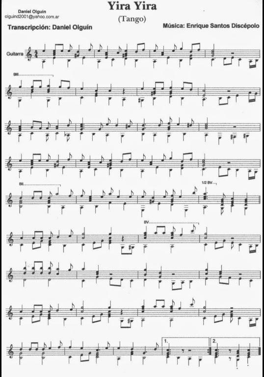

Yira, yira! (1930)
Rôde, rôde
Paroles de Enrique Santos Discépolo
Musique de Enrique Santos Discépolo
|
|

Enrique Santos Discépolo (Discepolín) (1901 - 1951) est un poète et compositeur argentin, auteur de nombreux tangos. Plusieurs de ses uvres ont été interprétées et enregistrées par les plus grands chanteurs de son époque, incluant Carlos Gardel, et demeurent à ce jour de grands classiques. Il est considéré comme l'une des figures emblématiques du tango. C'est le fils d'un musicien napolitain et d'une mère argentine. Il compose son premier tango en 1925. C'est en 1928 qu'il accède à la notoriété avec "Esta noche me emborracho" (cette nuit je me saoule), qui se fait entendre jusqu'en Europe et qui sera enregistré par Carlos Gardel la même année. L'uvre de Discépolo se distingue par la diversité des styles employés. Ses textes passent de la simple romance à l'ironie, à la nostalgie ou l'angoisse existentielle. En1950 il prend publiquement parti pour le Péronisme et se brouille avec ses ami et son public. Une vingtaine de ses créations compte parmi les tangos les plus célèbres. "Yira, yira" est peut-êtte son chef d'oeuvre. Le voici interprêté par Carlos Gardel en 1926 |
